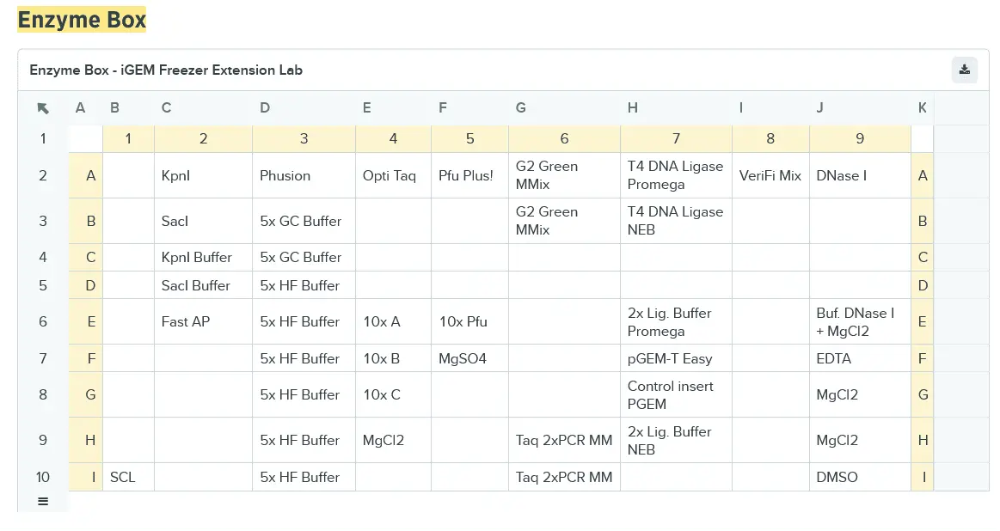

Overview Team- and Working-Structure
With such a large team, we quickly realized the necessity of a clear working structure in every aspect of the project. Thus, we compiled a list of everything we learned and established in the last months. We want to provide this knowledge to future teams to help them kickstart their workflow. Below, you can see the compiled list with suggestions on how to structure your workflow.
General
Elect a Team Leader responsible for organizing the whole team and especially watches the competition requirements and the deadlines. It is recommended that this person takes a vacation semester.
Elect a Subgroup Leader for every subgroup there is (such as lab, human practices, design, etc.). This person is communicating with the Team Leader and is also responsible for organizing their subgroup.
You may use Microsoft Teams as a team platform.
For any regular meeting, it is advisable to use the method of ‘silent meetings’. It works as follows: Before the meeting, every subgroup leader (or person with news) writes a detailed description about what they have to say. When the meeting begins, everyone mutes themselves and reads through the agenda. When finished, participants can e.g. a give response by raising their hands digitally. For questions during the meeting, one can use the comment feature in Word. Once everyone has finished reading, the team can go over to discuss topics that require further discussion. This method has two major advantages:
- Members that missed the meeting can easily catch up.
- It tremendously reduces the time needed for a meeting.
Carefully think about the file organization in Teams and correctly name documents, e.g., with dates. Prevent naming files ‘presentation’, ‘presentation_new’, ‘presentation_updated’, … as this only causes confusion.
Right from the beginning, start a list with every person that contributed to your project in any way, like ‘experts’, ‘supervisors’, ‘sponsors’.
Use a calendar to keep track of every meeting happening. You can also use it for vacation periods for members of your team.
You may want to use ‘github’ for your wiki. It allows the wiki team to set up the wiki from github easily; it keeps the progress structured and allows constant backups in case some things go wrong.
Laboratory Subgroup
It is recommendable to have at least one meeting a week. This year, we had two meetings a week: one general update meeting and one on Fridays to plan experiments for the next week.
You can plan available people for the next week or next weeks by implementing a shift availability schedule into Teams. The subgroup leader then used this shift availability schedule to plan the shifts for the next week in a Google Calendar. We used a simple Excel table:
Figure 1: Schedule Planner for Laboratory Subgroup
It is advisable to assign specific tasks to group members, e.g. one or two people responsible for any orders, people who focus more on research or communication with supervisors and experts.
Additionally to the shift availability schedule, we implemented a general availability plan for the remaining weeks of the competition in order to estimate the available capacities. Example of how this can look like:

Figure 2: Availability Planner
Labwork Organization
Instead of a manual lab book, it is highly recommendable to use a digital notebook. We settled on the program ‘Benchling’ as it provided the best structure and features in the free version. Using a digital notebook makes organization much more manageable; it allows every member to easily follow up and makes follow up work much more convenient.
Below, you can see our general folder structure with organizational features that will be described in more detail below:

Figure 3: Structural Organization in Benchling
- We started to introduce ‘Standard Operation Procedures’ (SOP). These are detailed protocols for used methods in the lab that follow a distinct structure. The goal of an SOP should be that every member of your team can perform a method just by reading through the SOP. The usage of SOPs has two advantages: 1. Each member can perform every method relevant for the project, while also reducing the risk of errors or error propagation; 2. When you write a protocol, you can use Benchlings tag function to tag the SOPs for the performed experiment. Below, you can find the general structure that an SOP should follow as well as an example SOP.
- In addition to the SOP, you should use the same protocol structure for all your experiments. For this, we added a standard protocol structure that is followed at all times. This ensures a clear structure for all your experiments and allows each member to quickly understand what an experiment is about. You can find our standard protocol structure below:

Figure 5: Protocol Structure
Adding a To-Do list to your Benchling can help you organize tasks and planned experiments. In the To-Do list, we defined short-, mid-, and long-term goals and experiments
Another important part of lab organization is keeping up with an inventory. It helps everyone to immediately find where everything needed is stored. It is advisable to assign each tube its own place in a storage box. To better understand the system, the picture below displays how we approached our inventory system. You should also always add the place of storage of these boxes (e.g. freezer, fridge, etc.)

Figure 6: Inventory Organization

Figure 7: Freezer and Fridge Box Organization
- A further step towards an organized lab is using a table in which you keep track of all your orders and planned orders. This way, every member can check what was ordered and not just the person responsible for orders.

Figure 8: Laboratory Orders Organization
- Labeling of Tubes. We cannot stress this enough, please label your tubes properly to avoid any confusion and mistakes in the lab. Always write down what is in the tube, the date, and the concentration (if applicable). Since the labels wash off easily when frozen or they get in touch with any detergent, you should use circular paper stickers for labelling (see image below). If you have multiple copies or aliquotes of one reagent, you can mark the tube in usage with an ‘X’ so that you empty one tube before using another one.

Figure 9: Proper Labeling of Tubes
- Try to define the way of writing units, labeling tables, labeling images, etc., from the beginning and make sure to follow this structure. This reduces the amount of revision and correction that you have to do afterward.